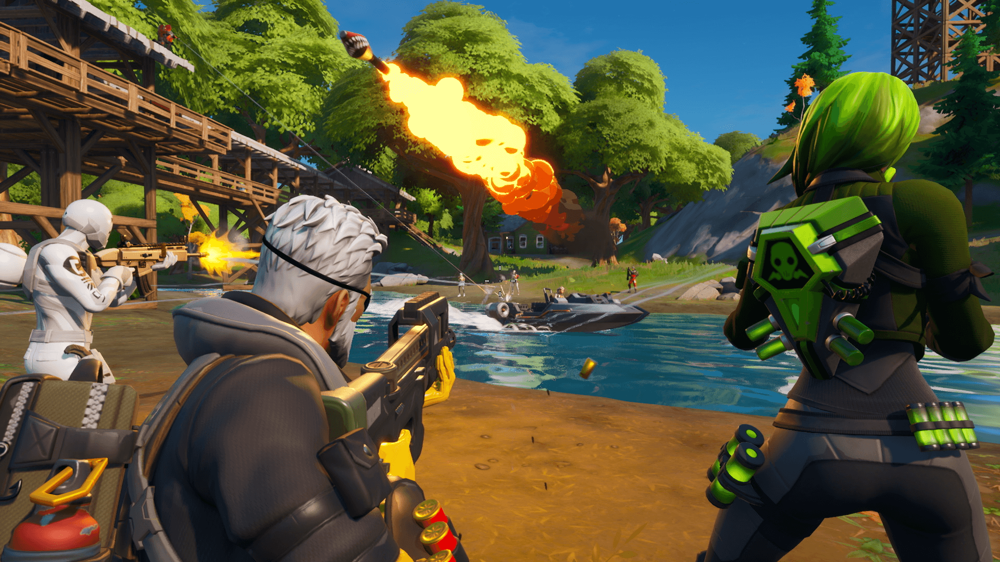
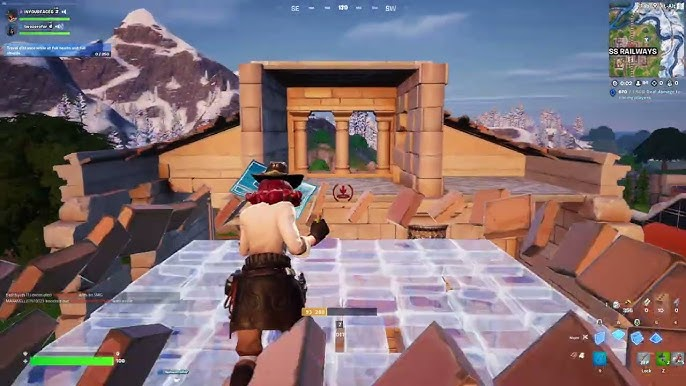

Poradnik do FORTNITE (Battle Royale)
1. Podstawy gry Fortnite
Cel gry: Twoim celem jest przetrwanie i wyeliminowanie innych graczy. Gra odbywa się na ogromnej mapie, a obszar gry z czasem staje się coraz mniejszy, co zmusza graczy do walki.
Zbieranie zasobów: Na mapie znajdziesz różne przedmioty, broń i zasoby. Zbieraj drewno, kamień i metal, aby budować struktury (forty), które pomogą Ci w obronie lub przy napotkanych przeciwnikach.
2. Zbieranie i zarządzanie ekwipunkie
Broń: Istnieje wiele rodzajów broni, takich jak pistolety, karabiny, strzelby czy granaty. Broń ma różne kolory, które oznaczają jakość:
- Szary (common) – najgorsza jakość
- Zielony (uncommon)
- Niebieski (rare)
- Fioletowy (epic)
- Złoty (legendary) – najlepsza jakość
Zasoby: Drewno, metal i kamień są niezbędne do budowania struktur. Drewno jest najszybsze do zebrania, ale metal jest najbardziej wytrzymały.
Leczenie: Zbieraj apteczki, mikstury ochrony (shield potions) oraz zestawy medyczne, które pomogą Ci odzyskać zdrowie i tarczę.
3. Budowanie
Budowanie
- Obronić się przed wrogami – twórz ściany, schody, podłogi i stropy, aby ukryć się przed ostrzałem lub zdobyć wyższą pozycję.
- Podnieść się wyżej – użyj schodów, by dostać się na wyższe poziomy i zyskać przewagę nad przeciwnikiem.
- Trapowanie przeciwnika – możesz używać budowli do zaskakiwania wrogów lub zmuszać ich do określonej lokalizacji.
Tip: Buduj szybko w trakcie walki, aby zaskoczyć przeciwnika i zmniejszyć ryzyko bycia trafionym. Ćwiczenie jest kluczowe!
4. Ruch i walka
- Zawsze bądź w ruchu: Nie stój w jednym miejscu zbyt długo. Bieganie, skakanie, czy wykonywanie zwrotów zmniejsza szansę, że przeciwnik trafi w Ciebie.
- Wykorzystuj wyskoki i zjazdy: Kiedy jesteś w trakcie walki, skacz i przemieszcza się z boku na bok, aby utrudnić przeciwnikowi trafienie.
- Strzelanie z osłon: Używaj ścian lub innych obiektów, by mieć osłonę podczas wymiany ognia.

